Почему Wi-Fi не будет работать, как планировалось, и зачем знать, каким телефоном пользуется сотрудник
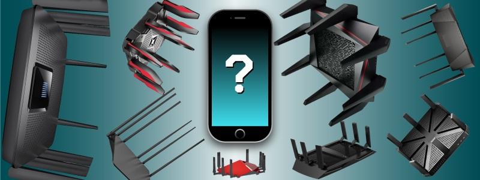
Привет!
Поговорим о том, что реально влияет на скорость передачи данных в современных беспроводных сетях, развенчаем пару мифов и ответим, пора ли поменять свой старенький роутер на сверкающего рогатого пришельца с MU-MIMO на борту.
Для разминки — небольшая задачка. Представьте себе беспроводную сеть Wi-Fi, состоящую из точки доступа (AP) и двух одинаковых клиентских устройств (STA1 и STA2).
Читаем надписи на коробках:
AP: 1733,3 Мбит/c
STA1, STA2: 866,7 Мбит/c
Внимание, вопрос. Оба клиента одновременно начинают загружать с сервера большой файл. На какую пропускную способность может рассчитывать каждое из устройств?
Сразу оговоримся — для простоты и наглядности мы будем называть пропускную способность (канальную скорость) просто скоростью. Да, скорость работы протоколов транспортного уровня может оказаться в два раза ниже, чем наша скорость, но вы и так всё это знаете. Сейчас о другом.
Наша задачка призвана напомнить о главном ограничении беспроводных сетей.
Общая среда передачи (shared medium) подразумевает, что в единицу времени вещать должно только одно устройство.
Это обстоятельство приводит нас к контринтуитивному ответу: несмотря на то, что точка доступа способна поддерживать 1733,3 Мбит/c, каждое из устройств будет работать, в среднем, на скорости 433,3 Мбит/c.
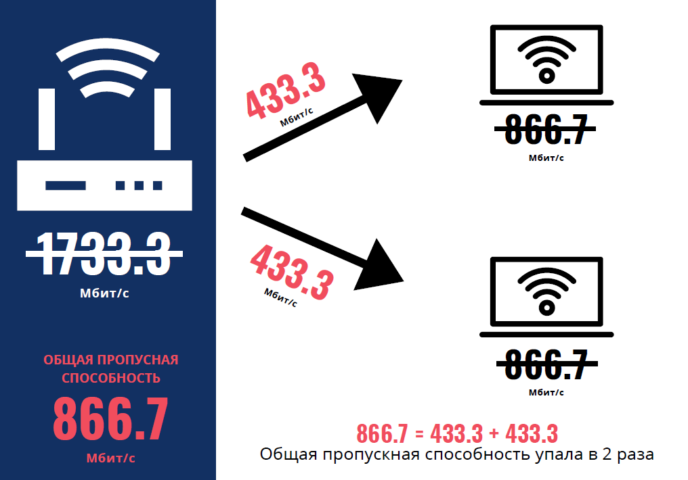
Куда делись оставшиеся 866,7 Мбит/c? Давайте разбираться.
Для описания принципов работы беспроводных сетей удобно использовать метрику Airtime Utilization. Она показывает, какую часть времени эфир занят передачей данных.
Теперь — внимание! Для того, чтобы развить заявленные 1733,3 Мбит/c, устройство должно единолично занимать эфир все 100% времени. При этом второе устройство (принимающее) должно также поддерживать данную скорость.
Ещё раз подчеркнём — связь между устройствами, поддерживающими разные скорости, осуществляется на скорости наименее быстрого из пары.
Всё становится грустнее, если максимум устройства, например, 72,2 Мбит/c. Занять придётся те же самые 100% эфира, но результат уже совсем не впечатляющий.
К слову, 72,2 Мбит/c — скорость не случайная. Большинство современных смартфонов на большее могут не рассчитывать, но об этом позже.
Теперь вернёмся к STA1 и STA2. По условиям они начали загружать файл на сервер одновременно. Мы помним, что в единицу времени вещать может только одно устройство.
Координирует передачу в сети Wi-Fi механизм CSMA/CA — Carrier Sense Multiple Access with Collision Avoidance. Если вкратце, его задача — последовательно дать право голоса всем устройствам, при этом, по возможности, не допустив одновременной передачи от двух и более устройств (коллизии).
Можете почитать википедию, если хотите подробностей.
А лучше — это. Или — вот, если настроены совсем серьёзно.
Причём тут Airtime Utilization? А при том, что в итоге работы CSMA/CA для данного случая каждое из двух готовых к передаче клиентских устройств получит под свои нужды примерно половину эфирного времени — или 50% Airtime.
100% Airtime — 866,7 Мбит/c;
50% Airtime — 433,3 Мбит/c на каждое из устройств.
Эта картина не поменяется, даже если точка доступа будет поддерживать все 6933,3 Мбит/c. Связь между AP и STA всегда ограничена скоростью наименее быстрого из устройств.
Можете из любопытства слегка поиграться с условиями задачи:
Изменим скорость для STA2 — 72,2 Мбит/c;
Добавим STA3, скорость — 72,2 Мбит/c.
Что осталось от заявленных 1733,3 Мбит/c?
Важное уточнение №1
Справедливости ради добавим, что данные расчёты верны при включении на БС функционала Airtime Fairness, без него всё было бы гораздо хуже — медленные клиентские устройства привели бы к максимально неэффективному распределению Airtime. Хорошо, что технологию внедрили практически все уважающие себя вендоры.
Но и тут есть нюанс: Airtime Fairness работает только в Downlink (от AP к STA). В Uplink по-прежнему царит анархия.
Важное уточнение №2
В реальной сети из-за загруженности эфира, коллизий и особенностей работы протокола максимально достижимый уровень Airtime Utilization находится в пределах от 70% до 80%.
Соответствующим образом поменяется и рассчитанная нами скорость.
К чему столь долгая прелюдия? Знайте, какие клиентские устройства используются на вашей сети. Их влияние на производительность в условиях общей среды передачи данных критически недооценено. Далее будем разбираться — насколько.
Часть 1 — Во всём виноваты клиенты
Или клиентские устройства, если угодно. Чем же они провинились и что, собственно, отличает их от точек доступа?
Всё просто. Чаще всего клиенты — компактные, автономные и мобильные. Из этого вытекают все проблемы.
Стильный металлический корпус толщиной 7 мм? Для размещения 4-х радиотрактов MIMO лучше не придумаешь.
Многопоточная передача данных и широкие каналы слишком энергозатратны? Ничего, пусть заряжают устройства несколько раз в день.
Клиенты постоянно перемещаются? Ерунда — выкрутим мощность на точках на максимум.
В подобных условиях разработчики вынуждены идти на компромиссы.
Помните могучую точку доступа (1733 Мбит/c) из вступления к статье? Давайте пойдём ещё дальше. Стандарт 802.11ac позволяет нам разогнаться до внушительных 6933 Мбит/c.
Условия для этого следующие:
Соответствующие требованиям точки доступа на рынке представлены даже в потребительском сегменте. Что с клиентами?
Для наглядности проведём мысленный эксперимент: подключим к нашей абстрактной точке вполне конкретный смартфон — iPhone 8. Посмотрим, на что он способен.
2,4 ГГц vs 5 ГГц
Многолетние наблюдения подтверждают — устройств, работающих в «пятёрке», всё больше. И это прекрасно.
Единственное достоинство 2,4 ГГц — меньшее затухание — на сегодняшний день превратилось едва ли не в недостаток.
При проектировании плотных сетей одна из задач — борьба с интерференцией. Боремся, в том числе, за счёт изоляции зон покрытия AP друг от друга. В ход идут стены, занижается мощность на передатчике, и «дальнобойность» двойки здесь явно лишняя.
Так или иначе — будущее Wi-Fi за «пятёркой», если не рассматривать уж совсем узкие кейсы.
Статистика, тем не менее, не даёт однозначно достоверных данных по распределению устройств — слишком много переменных (страна, регион, локация, мероприятие и другие).
Пожалуй, на сегодняшний день можно осторожно говорить, что в России мы достигли соотношения 50/50 по поддержке в клиентских устройствах диапазона 5 ГГц.
Как будет в вашей сети — другой вопрос.
Наш воображаемый iPhone 8, кстати, «пятёрку» поддерживает, ну и хорошо.
MIMO
Возможность одновременно передавать несколько потоков данных в едином частотном канале появилась ещё в 802.11n. Однако, воз и ныне там:
А всё потому, что технология MIMO очень требовательна:
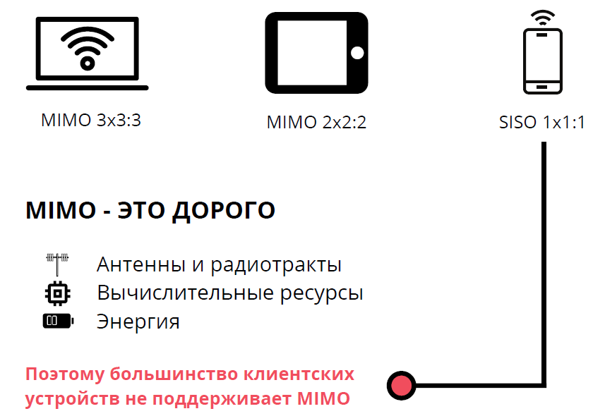
MIMO, SISO — что это, вообще, такое? И что за цифры?
Клиентские устройства с MIMO 4x4:4 начали появляться на рынке совсем недавно. В основном это выделенные адаптеры Wi-Fi, но недавно нас ошарашил Samsung, заявив в описании к своему новому Galaxy Note 9 — MIMO 4x4. Очень некстати, ведь мы хотели написать, что мобильных устройств с подобными характеристиками на рынке пока нет.
В связи с этим — конкурс.
Условия
Как говорят — исключения подтверждают правило.
Устройств с MIMO 4x4:4 — практически нет. MIMO 3x3:3 — удел редких Macbook Pro. MIMO 2x2:2 — в топовых смартфонах и планшетах. Статистическое большинство — устройства, не поддерживающие MIMO.
Мы не будем как большинство. Наш iPhone 8 — топовый смартфон, поддерживающий передачу аж двух пространственных потоков.
Откуда мы это узнали — важный вопрос. Расскажем в последней части статьи.
Как мы помним, связь между устройствами, поддерживающими разные скорости, осуществляется на скорости наименее быстрого из пары.
Вжух — и осталось 1733,3 Мбит/c. Грустно. Но весело — это ведь почти два гигабита!
Математика
Ширина канала
802.11ac позволяет нам использовать каналы шириной в 160 МГц.
Пожалуйста, не делайте этого.
Более того, каналы в 80 МГц также категорически не рекомендованы к использованию.
Ещё раз:
Всё дело в том, что, расширяя полосу, мы, по сути, распахиваем ворота для интерференции всех мастей — портим эфир и себе, и соседям.
Мы не будем подробно разбирать, почему так происходит — это тянет на отдельную статью, однако можете самостоятельно ознакомиться с рекомендациями и Best practice guides ведущих вендоров — только 20 МГц, за редкими исключениями.
40 МГц допускается только в “пятёрке”, в случае, если плотность клиентов и обстановка в эфире позволяет.
Но мы ведь оптимисты — будем считать, что наша сеть именно такая.
Итак, от 1733,3 Мбит/c остаётся 400 Мбит/c — для канал шириной 40 МГц.
Математика
Ок, уже не так впечатляет, но всё равно неплохо, да?
P.S.: Если вы живёте в лесу и очень хорошо понимаете, что делаете — хорошо, включите 160 МГц. Не факт, что будет толк. Например, пресловутый iPhone 8 такую ширину канала не поддерживает, хотя выпущен всего год назад.
Читайте до конца, чтобы узнать, на что способно ваше устройство.
Модуляция
Любопытный факт: клиентские устройства — основные источники интерференции в сети.
К чему это? А к тому, что даже идеально спланированная и настроенная сеть не гарантирует работу на максимальных модуляциях, ведь 256QAM предъявляет очень высокие требования к качеству сигнала — RSSI и SNR.
Про RSSI мы ещё поговорим, а SNR напрямую страдает от клиентов со всенаправленными антеннами — таких мобильных и непредсказуемых. Ну, и не только от них, разумеется.
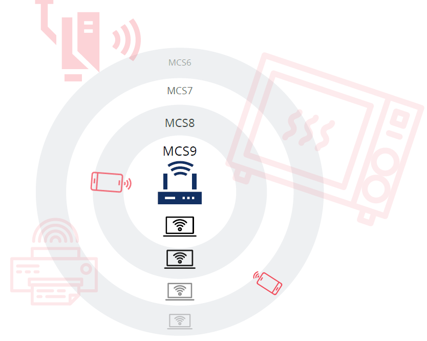
Как результат — рассчитывайте, что большую часть времени клиенты будут использовать менее требовательную модуляцию. Например, 64QAM.
В нашем эксперименте это безжалостно снижает скорость до 300 Мбит/c.
Математика
Что касается RSSI — то это наш любимый параметр. В стандарте 802.11 никаких описаний и требований к нему нет, поэтому каждый вендор видит данную метрику по-своему. Соответственно, разные клиентские устройства будут показывать разный RSSI в одном и том же месте.
Вы, кстати, по какому уровню планируете? -67 дБм? А для какого устройства?
Но и это ещё не всё
Подытог №1
Даже при весьма оптимистическом сценарии клиент получит всего 300 Мбит/c пропускной способности — вместо 6933 Мбит/c. И это в случае, если клиент всего один! Много таких сетей знаете?
Вспоминаем задачки. Чем больше клиентов — тем хуже. Не хотели расстраивать раньше времени, но зависимость нелинейная. С ростом числа устройств в сети увеличивается процент оверхеда.
Вот каким правилом предлагает пользоваться уважаемый Devin Akin в своей статье о реальной пропускной способности в Wi-Fi
Итог: производительность сильно зависит от подключенных клиентов. Скорее всего, их способности будут весьма ограниченными.
Оптимистичный сценарий —300 Мбит/c (5 ГГц, 40 МГц, 2SS, 64QAM).
Реалистичный сценарий — 72 Мбит/c (2,4 или 5 ГГц, 20 МГц, 1SS, 64QAM).
Часть 2 — Что ещё не так с клиентскими устройствами
Да, всё только начинается.
Можно выделить три крупных проблемы:
Давайте разберём их подробнее.
Многообразие
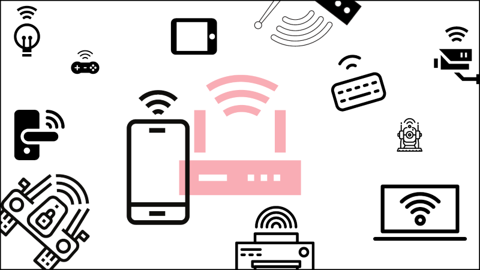
Помните наш iPhone 8? Хороший телефон, кстати. А знаете, что Apple перестала получать сертификацию Wi-Fi Alliance начиная с iPhone 6?
Можете проверить сами — информация открытая.. Заодно напишите в комментариях о других удивительных открытиях.
Что, собственно, за организация — Wi-Fi Alliance?
Ребята пытаются следить за порядком в зоопарке. Значок Wi-Fi Certified означает, что устройство было проверено на соответствие основным пунктам стандарта 802.11. Проверка ведётся в аккредитованных лабораториях, всё более-менее серьёзно.
Почему возникла подобная необходимость?
Для того, чтобы обеспечить совместимость миллионам разнообразных устройств, работающим на разных чипсетах и разработанных людьми, отличающимися разной степенью квалификации и моральными ориентирами.
Помогло?
Не очень. Как показывает практика, каждый вендор имеет своё уникальное видение и позволяет себе отступать от стандарта (из лучших побуждений, разумеется).
Один из забавных примеров — прошлогодний KRACK. Не все устройства были подвержены уязвимости, так как многие производители по-своему интерпретировали процедуру обмена ключами. В частности — как вести себя в случае отсутствия ответа на третье сообщение последовательности 4-Way Handshake. Почитайте подробнее, если интересно.
Что в итоге?
Зоопарк.
Проще всего, по понятным причинам, с Apple. Хотя они и не сертифицируют свои новинки, парк устройств всё-таки ограничен. Поэтому можно протестировать поведение в тех или иных сценариях.
Дальше идёт Android. Тут многое зависит от производителя, но в целом — ещё больше неизвестных. Добавьте сюда китайцев.
На этом идеи по классификации заканчиваются. Операционные системы, драйвера, legacy-устройства, мультиварки, дверные замки, камеры видеонаблюдения — BYOD и IoT во всей красе.
Проблема усугубляется тем, что многие критические решения клиентские устройства принимают самостоятельно, напрямую повлиять на них нельзя.
Подключиться к «пятёрке» или к «двойке»?
Произвести роуминг или остаться на старой AP?
На какой модуляции работать?
Об этом подробнее в следующей главе.
Непредсказуемость
Wi-Fi устроен так, что клиентские устройства стараются самостоятельно справиться с возникающими трудностями. Не всегда эти решения оптимальны.
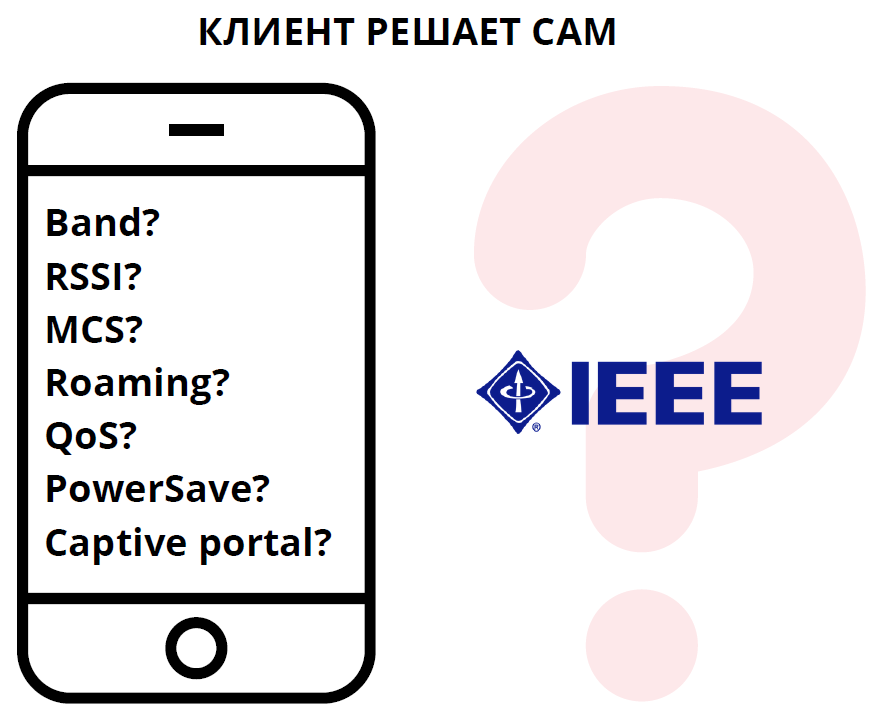
Если устройству кажется, что лучше сидеть на шестом канале с уровнем -85 дБм, чем переподключиться к соседней точке с уровнем -50 дБм, работающей в свободной «пятёрке» — значит, так оно и будет.
Эффективных механизмов, позволяющих прямо управлять поведением клиентских устройств, нет. В этом отличие, например, от сотовой связи.
Вы возразите — а как же 802.11k (Radio resource measurement enchancements) и 802.11v (Wireless network management), принятые в 2008 и 2011 году соответственно?
Данные стандарты теоретически направлены на решение проблемы. Практически — ничего не работает.
Да, точка может отправить Load Balancing Request — вежливо попросить клиента произвести роуминг. Удовлетворять данную просьбу никто не обязан. Более того, клиентов, поддерживающих 802.11k и v, до сих пор мало.
Основное применение описанных выше стандартов — помощь в быстром роуминге механизму 802.11r (Fast BSS transition). Клиент получает список ближайших AP, на которые ему стоило бы переподключиться — и уже дальше сумасбродное устройство решает, что для него лучше.
О роуминг сломано немало копий, хорошие статьи можно найти здесь, на Хабре.
Раз. Два.
Есть ещё монументальное (но незавершённое) исследование прекрасного Andrew von Nagy —
три.
Повторяться не будем, просто ещё раз подчеркнём: переключение между AP — на совести клиента. От этого и большинство проблем.
Вендоры пытаются бороться с самостоятельностью клиентов. Стандартные средства не помогают, поэтому в ход идут ухищрения. Это прямо как в книжках по бизнесу: не пытайся переубедить — сделай так, чтобы клиент сам пришёл к нужному выбору.
Так, например, работает Band Steering (механизм перевода клиентов из «двойки» в более свободную «пятёрку»):
К сожалению, некоторые устройства очень упорны. Убеждение не действует, и они продолжают цепляться к выбранному диапазону, пока точка не сдастся и не подтвердит подключение.
Сдаться придётся, ведь иначе можно нарваться на неожиданный эффект — отвергнутый и раздосадованный клиент просто помечает данный SSID как ненадёжный и перестаёт автоматически подключаться к сети (раньше за подобным поведением были замечены устройства Apple, к примеру).
Список можно продолжать бесконечно:
Зафиксируем: напрямую управлять решениями драйверов клиентских устройств невозможно. Существующие механизмы позволяют лишь косвенно мотивировать клиентов к совершению нужного выбора. Клиент прав не всегда, но его это не волнует.
Уязвимость
Как известно, безопасность системы в целом находится на уровне самого слабого из её элементов. В правильно настроенной беспроводной сети таким элементом неизбежно становится клиентское устройство. В чём проблема?
Ниже примеры решений, применяющихся в корпоративных сетях:
Обычные пользователи проблемами безопасности зачастую пренебрегают вовсе.
Тема безопасности беспроводных сетей обширна. В данной статье мы ограничимся тем, что основной вектор атаки киберпреступников — так называемый low hanging fruit. Чаще всего таким фруктом становится клиентское устройство.
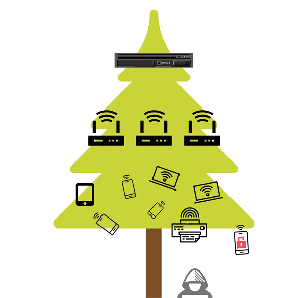
Зачем пытаться напрямую влезть в защищённую сеть, если достаточно получить доступ к смартфону сотрудника, который из гордости не устанавливает обновления на свою ОС?
Подытог №2
Перечисленные проблемы (многообразие, непредсказуемость и уязвимость клиентских устройств) бросают проектировщикам и администраторам беспроводных сетей серьёзный вызов.
Идеальное планирование, полноценное радиообследование и качественный монтаж не гарантируют стабильную работу сети.
Знать, какими устройствами пользуются абоненты, действительно, важно. Остаётся понять, какими характеристиками обладает то или иное устройство.
Неожиданно — это не самая простая задача.
Часть 3 — Производители что-то скрывают
Способ 1. Логичный
Казалось бы, что может быть проще — заходим на сайт производителя и смотрим на детальные спецификации устройств.
Попробуем на примере привычного iPhone 8:
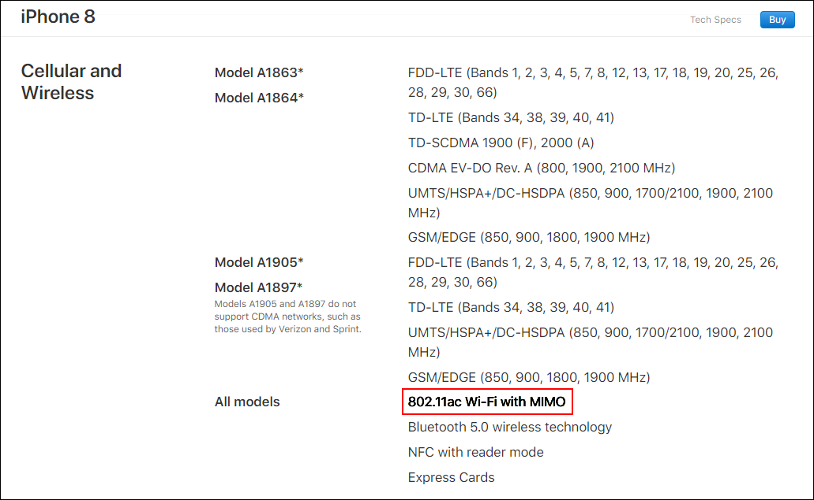
На сайте Apple.
802.11ac Wi-Fi with MIMO… Не очень-то информативно. Сколько пространственных потоков? Какая максимальная ширина канала? Есть ли поддержка 802.11r, k, v? MU-MIMO?
Samsung делится информацией о своём Galaxy S9 несколько охотнее:
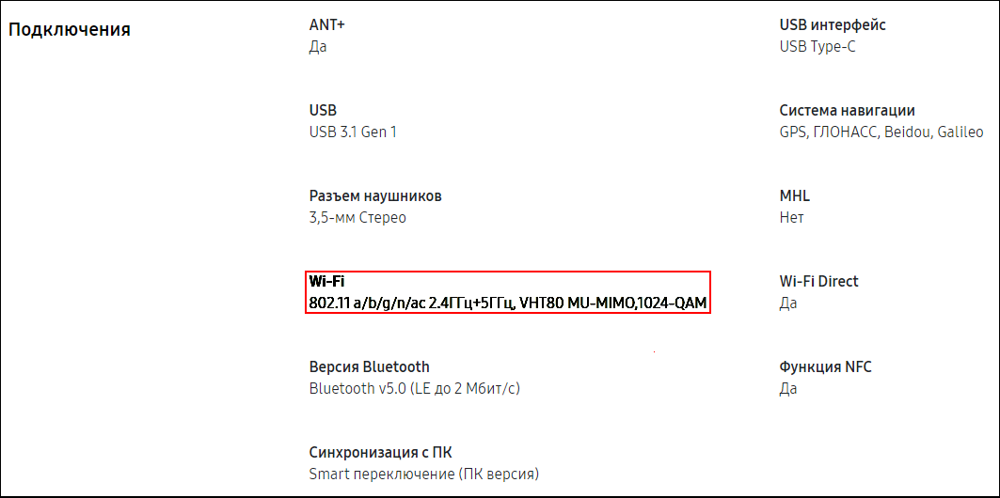
На сайте Samsung.
Даже если отбросить загадочную модуляцию 1024QAM (официально она появится только в 802.11ax), мы по-прежнему знаем об устройстве слишком мало.
Степень открытости производителей варьируется в широких пределах — есть и приятные исключения. В основном же во внутреннюю кухню никого не пускают (снова ради нашей пользы, разумеется), ведь многие знания — многие печали.
С этим согласны не все.
Способ 2. Практичный
Недовольные пользователи уже давно ведут собственные базы, куда заносят добытые характеристики устройств.
Яркий пример — сайт уважаемого Mike Albano.
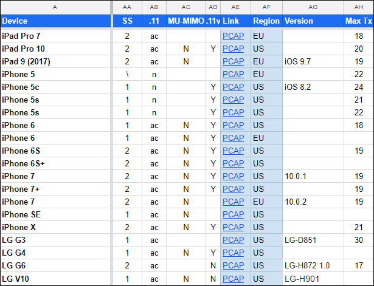
Здесь можно найти следующую информацию:
Доверять или нет данной информации — дело каждого.
Любой неравнодушный может внести свою лепту, поделившись с общественностью результатами своих изысканий. Инструкция — в разделе How To Contribute. Из данной инструкции можно узнать, что вся интересующая нас информация содержится во фрейме Association Request, отправляемом клиентским устройством при подключении к AP.
Способ 3. Для гиков
Всё, что нужно — это перехватить обмен сообщениями между абонентом и AP, сопутствующий первоначальному установлению соединения. Данный трафик не шифруется, однако сложности возникнуть могут — не все Wi-Fi адаптеры позволяют «сниффать» 802.11-фреймы. Операционные системы также могут в разной степени облегчить, либо усложнить задачу.
Тема великолепно гуглится, поэтому ссылок давать не будем.
Счастливчики смогут наблюдать следующую картину:
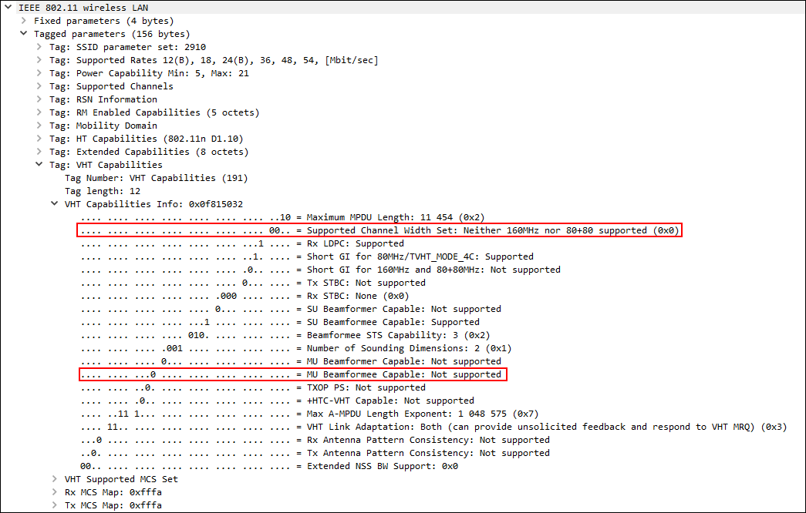
Тут есть всё, друзья.
Из любопытного — тот самый, уже надоевший, iPhone 8 не поддерживает MU-MIMO. Но не будем портить вам удовольствие.
Кстати, готовые PCAP-файлы, полученные пользователями, можно скачать на том же самом clients.mikealbano.com
Способ 4. Бонусный
Есть ещё один замечательный способ узнать всю подноготную устройства. Что примечательно — без регистрации и SMS.
Все продаваемые на территории США устройства обязаны получить сертификацию от FCC — Federal Communications Commission (Федеральная Комиссия по Связи). В результате устройству присваивается FCC ID — уникальный номер, через который можно получить огромный объём информации прямо на сайте FCC.
Сам код (FCC ID) часто можно найти на устройстве, либо на коробке от него. В крайнем случае, поможет интернет.
Код состоит из двух частей: Grantee Code и Product Code. Вводите, как на картинке:
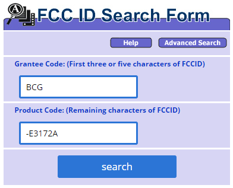
Мы получаем доступ к обширному архиву документов с данными, использованными во время сертификации. Доступны даже внутренние фотографии устройства — в некоторых случаях можно даже разглядеть модели чипов.
Обратите особое внимание на файл SAR Report — на основании данного отчёта можно не только определиться с толщиной шапочки из фольги, но и получить подробную информацию о характеристиках устройства. Бинго!
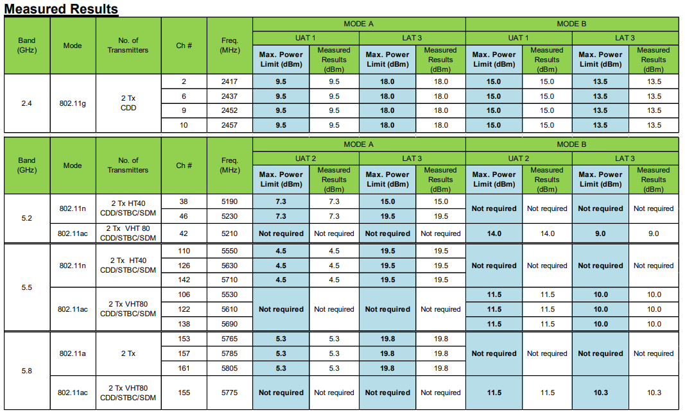
Подытог №3
Производители не спешат раскрывать полную информацию о характеристиках клиентских устройств. Тем не менее, благодаря активности сообщества, открытым источникам и собственной настойчивости, можно получить все необходимые данные.
Заключение
Зачем же знать, каким телефоном пользуется сотрудник? И пора ли менять свой старенький роутер?
Разумеется, всё зависит от задач. Если вы хотите строить надёжные и предсказуемые сети — отмахнуться от клиентского оборудования не получится. Учитывайте его особенности при планировании и обслуживании — будете вознаграждены снижением расходов и ростом удовлетворённости пользователей.
Всё сказанное не отменяет необходимости в использовании качественных точек доступа: многие наработки ведущих вендоров действительно эффективны — читайте наш блог, чтобы быть в курсе.
И ещё раз — учитывайте характеристики клиентов, чтобы тратить деньги на работающие решения.
Надеемся, что эта статья вам поможет.
Удачи!
Автор: Леонид Теканов, инженер беспроводного отдела CompTek.
Презентация по мотивам статьи прошла 25.10.2018 на нашей ежегодной конференции «БЕСЕДА». Не пропустите следующую.
Полезные ресурсы:
CWNP — если хочется не только хорошо разбираться в беспроводных сетях, но и получить официальное признание в виде сертификата;
Revolution Wi-Fi — сайт Andrew von Nagy — авторитетного товарища, подарившего миру удобнейший Revolution Capacity Planner;
Divergent Dynamics — сайт уважаемого Devin Akin, бескомпромиссного эксперта и автора множества ценных статей;
WLAN Professionals — детище Keith Parsons — настоящего ветерана Wi-Fi. Множество полезных материалов и целая ежегодная конференция для тех, кто настроен серьёзно;
badfi.com — хороший сайт про плохой Wi-Fi.